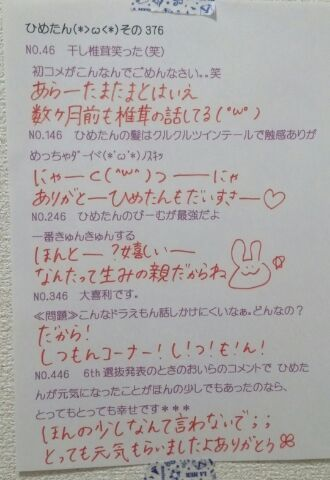

| 2014/03 10 Mon | ひめたん(*>ω<*)そ の417 |
たったいま解禁されたてほやほや
8thアンダー楽曲「生まれたままで」

この写メひめたん
お魚さんみたいな顔してる......
ん？別に何も言ってないよー
ステキなお衣装でしょー？
13金のワンピと同じくらい
好きだなこのお洋服♪♪
youtubeで公開されました！
公式サイトからいってらっしゃい
感想お待ちしておりまーす＼(^ω^)／
さらに発表されました
アンダーライブのお知らせ！
詳しいことはこちらも
公式サイトに飛んで見てきてほしいけど
ざっくり言うと
8thアンダーでライブを
やらせていただくことになりました！
ぜひぜひ応募してみてねー♪♪
それからドワンゴさんで
「33色のラブストーリー」
告白編がアップされましたっ☆
お電話まってますよせーんぱい

ひめたんはコメントを読んでいて
どうしても言わなきゃって
思ってたことがあります！
最高学年のみなさん
ご卒業おめでとうございます＼(^ω^)／
もう1月2月に卒業式終わっちゃった方も
まだこれからだよーって方も
いらっしゃると思うけど
このタイミングになってしまったこと
お許しくださいな。
この春から進学とか就職とか
そうでなくてもいろんな形があるとは思いますが
みなさん新たなスタートを迎えられるということで
いろいろと忙しかったりする時期だけど
どうか自分をしっかり持って( ^ω^ )ね
ひめたんは応援しておりますよー♪♪
こーんなときくらい
改まった、厳粛なご挨拶も
なんだかいいわね
お別れは悔いのないように
しっかりきっちりやってきてくださいね。
そしてっ
前回の日記に
とーてもたくさんのコメントを
書いていただきました(´；；｀)
本当に本当に本当に
ありがとうございます(´；；｀)
ひめたんはあまりにびっくりして
３度おめめが飛び出し
５度椅子から転げ落ちたあとさらに
７度天井を破壊してあろうことか
９度も空を飛びました！
......うーん
なんかもっと
メルヘンなでまかせ言えばよかったな
３じのおやつに
５リットルのバケツぷりんを
７人のおともだちと仲良く
９分ちょいで食べちゃいました！みたいな
......普通か。
でも！ほんとに
それだけ嬉しかったです(＊´ω`＊)
NOGIBINGO!2の
妄想リクエストの感想が
多かったかな？
ちゅー、しても、いいよ？
ちゅーのあとに一呼吸置くのが
どうやらミソらしいですよみなさん
おにゃのこは活用すること！わかったらメモ！
あのーはっきり言っておきますね
超絶恥ずかしいので
握手会で振らないでくださいねー
これフリじゃないよ(゜ω゜)

 ひめたんお腹空いたよ
ひめたんお腹空いたよ
ちなみに今は午前2時半だよ
この時間に食べるオススメのポテチ教えて
ひめたんはポテトチップスは
そんなに詳しくないけど
多分どの味食べても身体にとっては一緒だろうから
どうせなら好きな味食べるのが得策かと。
福岡ってどういう印象ありますか？
あと、スペワ知ってますか？
小学校の修学旅行 福岡だったよー
スペースワールドも行ったよー
地元民はスペワって呼ぶのね(゜ω゜)
そしてひめたんが行ったときは
タイタンがおやすみしておりましたーたいたーん
きゅんきゅん王国で
ひめたんのデザートのプリンを
盗み食いしたらどんな罪に問われますか？
国外追放しかないね
りんご王国にでも
飛ばしましょうかねヾ(＠⌒ー⌒＠)ノ
ひめたんはショートの女子すきー？
ひめたんは、ショートにしてたことある？？
ショートのおにゃのこ好きだよー♪
ひめたん自身は生まれて此の方一回もないです！
似合う自信がなくて、あとチキり続けて
気がつけば17年11ヶ月。
お泊まりでじゅうたんとみりりんは
どんな話ししたんですか？
ちょーっと待って！ちょ！
じゅうたんって誰のことや( ^ω^ )あん？
ひめたん明らかに目の前に
落とし穴があるの分かったらどうする？
そんな心配しなくても
自ら落ちに行かないですってばー
落とし穴ってのは見えないことに意味があるの！
狙ってないからびっくりするの！
バスケットゴールも一緒！
ひめたんは残念ながら
転けなかったみたいだけど、
転けたりドジったりした子はいた？
その前にひとつ聞いてもいいかな
残念ながらってなんですか(・∀・)
使い方あってる？あ間違ってないの？そっか。
ひめたんのブログの
コメント欄下２ケタに46を踏んだ方へ
手書きでコメ返するコーナー
＼ ひめたん46 ／

最後になりますが
3月11日
東日本大震災が起こってから
3年になります
ささいな幸せについて
改めて見つめなおす１日に
しようと思います。
(＊´・ω・＊)
コメント(503)
2014/03/10 23:48